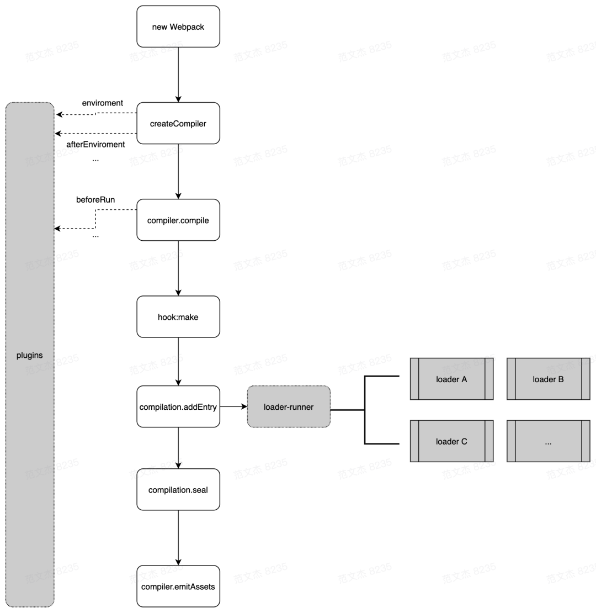
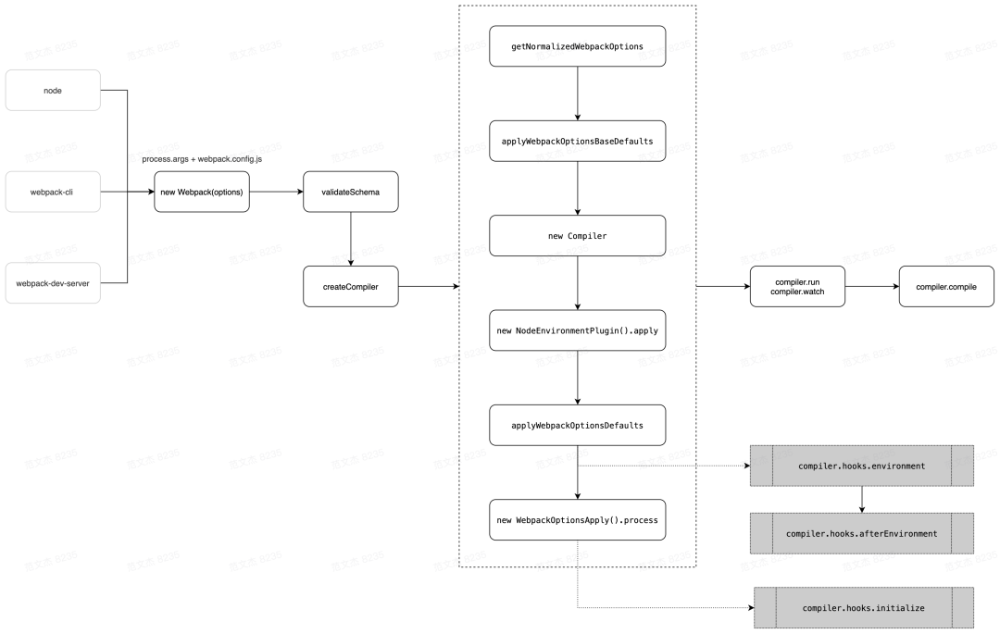

Webpack核心打包流程
本文最后更新于：2023年11月18日 晚上
作为前端工程化核心-打包工具中的老大哥,webpack 是每一个想深入了解前端架构的前端工程师必须要了解的一个工具
虽然 webpack 现在被人诟病速度慢，使用麻烦等问题，但他庞大的功能集依旧在现在是各个新生代打包工具的模仿对象。
今天这篇文章就深入了解一下 webpack 的核心打包流程，更有助于之后对于其他功能的了解和对 webpack 源码的解读
核心流程
一图流：

- 初始化阶段:
- **初始化参数:**通过配置文件，配置对象，shell 参数中读取，和默认配置结合得出最终的参数
- **创建编译器对象:**用上一步得到参数创建的
Compiler对象 - 初始化编译环境：包括注入内置插件、注册各种模块工厂、初始化 RuleSet 集合、加载配置的插件等
- 开始编译：执行
compiler对象的run方法 - 确定入口：根据配置中的
entry找出所有的入口文件，调用compilition.addEntry将入口文件转换为dependence对象
- 构建阶段：
- 编译模块(make)：根据
entry对应的dependence创建module对象，调用loader将模块转译为标准 JS 内容，调用 JS 解释器将内容转换为 AST 对象，从中找出该模块依赖的模块，再 递归 本步骤直到所有入口依赖的文件都经过了本步骤的处理。 - 完成模块编译：上一步递归处理所有能触达到的模块后，得到了每个模块被翻译后的内容以及它们之间的 依赖关系图
- 编译模块(make)：根据
- 生成阶段：
- 输出资源(seal)：根据入口和模块之间的依赖关系，组装成一个个包含多个模块的
Chunk，再把每个Chunk转换成一个单独的文件加入到输出列表，这步是可以修改输出内容的最后机会 - 写入文件系统(emitAssets)：在确定好输出内容后，根据配置确定输出的路径和文件名，把文件内容写入到文件系统
- 输出资源(seal)：根据入口和模块之间的依赖关系，组装成一个个包含多个模块的
单次构建过程自上而下按顺序执行，下面会展开聊聊细节，在此之前，对上述提及的各类技术名词不太熟悉的同学，可以先看看简介：
- Entry：编译入口，webpack 编译的起点
- Compiler：编译管理器，webpack 启动后会创建
compiler对象，该对象一直存活知道结束退出 - Compilation：单次编辑过程的管理器，比如 watch = true 时，运行过程中只有一个
compiler但每次文件变更触发重新编译时，都会创建一个新的compilation对象 - Dependence：依赖对象，webpack 基于该类型记录模块间依赖关系
- Module：webpack 内部所有资源都会以
module对象形式存在，所有关于资源的操作、转译、合并都是以module为基本单位进行的 - Chunk：编译完成准备输出时，webpack 会将
module按特定的规则组织成一个一个的chunk，这些chunk某种程度上跟最终输出一一对应 - Loader：资源内容转换器，其实就是实现从内容 A 转换 B 的转换器
- Plugin：webpack 构建过程中，会在特定的时机广播对应的事件，插件监听这些事件，在特定时间点介入编译过程
初始化阶段
初始化阶段是确定编译器对象以及编译环境，确定入口以便编译模块的进行
- 将
process.args+webpack.config.js合并成用户配置 - 调用
validateSchema校验配置 - 调用
getNormalizedWebpackOptions+applyWebpackOptionsBaseDefaults合并出最终配置 - 创建
compiler对象 - 遍历用户定义的
plugins集合，执行插件的 apply 方法 - 调用
new WebpackOptionsApply().process方法，加载各种内置插件
主要逻辑集中在 WebpackOptionsApply 类，webpack 内置了数百个插件，这些插件并不需要我们手动配置，WebpackOptionsApply 会在初始化阶段根据配置内容动态注入对应的插件
构建阶段(make)
webpack 的核心部分就是构建阶段，这个阶段主要是通过entry入口开始递归分析资源和资源的依赖，在compilation对象中将一个个打包成 module 集合以及 module 之间的依赖关系:
- 调用
handleModuleCreate，根据文件类型构建module子类 - 调用
loader-runner仓库的runLoaders转译module内容，通常是从各类资源类型转译为 JavaScript 文本 - 调用
acorn将 JS 文本解析为 AST - 遍历 AST，触发各种钩子
- 在
HarmonyExportDependencyParserPlugin插件监听exportImportSpecifier钩子，解读 JS 文本对应的资源依赖 - 调用
module对象的addDependency将依赖对象加入到 module 依赖列表中 - AST 遍历完毕后，调用
module.handleParseResult处理模块依赖 - 对于
module新增的依赖，调用handleModuleCreate，控制流回到第一步 - 所有依赖都解析完毕后，构建阶段结束
因为 webpack 中 JS 是一等公民,css 以及 html 等等文件都需要我们插入 loader 来进行转化为 JS，webpack 才能进行下一步：生成阶段
生成阶段(seal)
构建阶段围绕 module 展开，生成阶段则围绕 chunks 展开。经过构建阶段之后，webpack 得到足够的模块内容与模块关系信息，接下来开始生成最终资源了。代码层面，就是开始执行 compilation.seal 函数：
1 | |
seal 函数主要完成从 module 到 chunks 的转化，核心流程：
- 构建本次编译的
ChunkGraph对象； - 遍历
compilation.modules集合，将module按 entry/动态引入 的规则分配给不同的Chunk对象； compilation.modules集合遍历完毕后，得到完整的chunks集合对象，调用createXxxAssets方法createXxxAssets遍历module/chunk，调用compilation.emitAssets方法将assets信息记录到compilation.assets对象中- 触发
seal回调，控制流回到compiler对象
这一步的关键逻辑是将 module 按规则组织成 chunks ，webpack 内置的 chunk 封装规则比较简单：
entry及entry触达到的模块，组合成一个chunk- 使用动态引入语句引入的模块，各自组合成一个
chunk
chunk 是输出的基本单位，默认情况下这些 chunks 与最终输出的资源一一对应，那按上面的规则大致上可以推导出一个 entry 会对应打包出一个资源，而通过动态引入语句引入的模块，也对应会打包出相应的资源
seal 结束之后，紧接着调用 compiler.emitAssets 函数，函数内部调用 compiler.outputFileSystem.writeFile 方法将 assets 集合写入文件系统